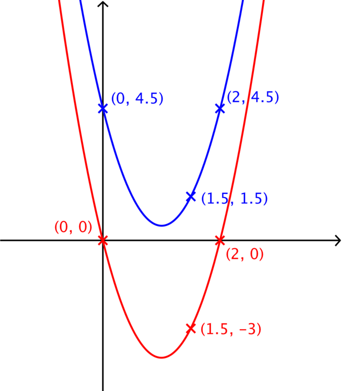

In how many ways can you identify the equation of this parabola?
In Name that graph we thought about the three formats in which we can write a quadratic equation. We explored some of the ways in which the equation of a parabola could be determined in each of these three forms and the relative efficiency of each.
Here we have three coordinates specified on the parabola, but because the graph is not plotted accurately with a background grid, we cannot read any additional points from the diagram.
We could of course go through the laborious process of forming three equations, one from each of the specified points on the parabola, in a,b,c and solve them simultaneously. This will give an equation in the form y=ax2+bx+c.
Using each of the three specified coordinates in turn we obtain three equations:
4.5=c1.5=2.25a+1.5b+c4.5=4a+2b+c(1)(2)(3)
Substituting the value of c from equation (1) into equations (2) and (3) and simplifying we have
−3=2.25a+1.5b0=4a+2b(4)(5)
We can eliminate b by doing 1.5×(5) - 2×(4) so that we have,
6=1.5a
giving
a=4.
Substituting the value of a back into equation (5) we have
0=16+2b
and so
b=−8.
The equation of the parabola is therefore
y=4x2−8x+4.5.
We could instead locate the line of symmetry and use this to find the equation of the parabola in completed square form.
We are given two horizontally aligned points on the parabola, (0,4.5) and (2,4.5). The line of symmetry will therefore be a vertical line located midway between these two points, i.e. the line x=1.
This means that the parabola can be written in the form
y=a(x−1)2+e.
Substituting the points (0,4.5) and (1.5,1.5) into this equation we have the two equations:
4.5=a+e1.5=0.25a+e(6)(7)
Solving simultaneously, by first eliminating e from equation (6), we have
3=0.75a=34a
and so
a=4.
Notice that converting the decimal into a fraction makes it easier to see the solution.
Substituting the value of a back into equation (6) we find that e=0.5.
So we now know that the equation of the parabola is
y=4(x−1)2+0.5.
It is sensible to check that this agrees with the equation obtained from approach 1.
Expanding we have
y=4x2−8x+4+0.5
which simplifies to
y=4x2−8x+4.5
as expected.
Making use of the diagram in “Have you thought about…” we could find the equation by considering a translation of the original parabola.

We can find the equation of the red parabola in factorised form because we can see the location of the two x-intercepts:
y=ax(x−2).
Substituting the third point on this translated parabola, (1.5,−3) into the equation we can find the value of a:
−3=0.75a=34a
and so
a=4.
So the equation of the red, translated parabola is
y=4x(x−2).
If we call the original blue parabola f(x) then the red parabola is f(x)−4.5.